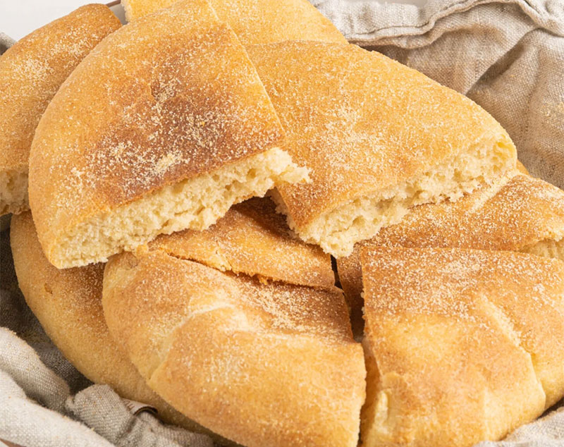

Home
Moroccan Bread (Khobz)

Description
Moroccan Bread, also known as Khobz, is a staple ingredient in any Moroccan spread and is known for its distinguishable round, flat shape. Today we are making it using 5 simple ingredients: flour, salt, sugar, oil, and yeast.
Ingredients
- 1 tablespoon active dry yeast
- 1 ¼ cup warm water
- 1 teaspoon sugar
- 2 cups all purpose white flour
- 1 cup fine semolina flour
- 1 teaspoon salt
- 3 tablespoons vegetable oil
- additional semolina flour to keep the bread from sticking while baking
Instructions
- Add both kinds of flour, yeast, sugar, salt, oil, and warm water to a large mixing bowl.
- Mix everything together with your hands, adding a small splash of warm water and oil if too dry. Continue to knead until a consistent dough forms, adding oil to your hands if things get too sticky.
- Rub the dough with a drizzle of oil, cover with plastic wrap or a clean towel and rest for 45 minutes, or until it has doubled in size.
- Divide the dough into fourths and roll each section into a ball. Roll each ball in semolina flour to coat.
- Cover again and give the discs 15 minutes to rest. Gently flatten each ball of dough into a round, pizza shaped disc. They should be about ¼ inch in height.
- Prep a baking surface (you can use a baking sheet, cast iron pan, or dutch oven) with parchment paper or a sprinkle of semolina flour to keep the bread from sticking.
- Preheat your oven to 425° F / 218° C. Lightly poke the loaves with a fork. Bake each loaf in its own prepared pan, so they have enough room to rise, for 15-20 minutes, or until they are golden brown all around. Bismillah!